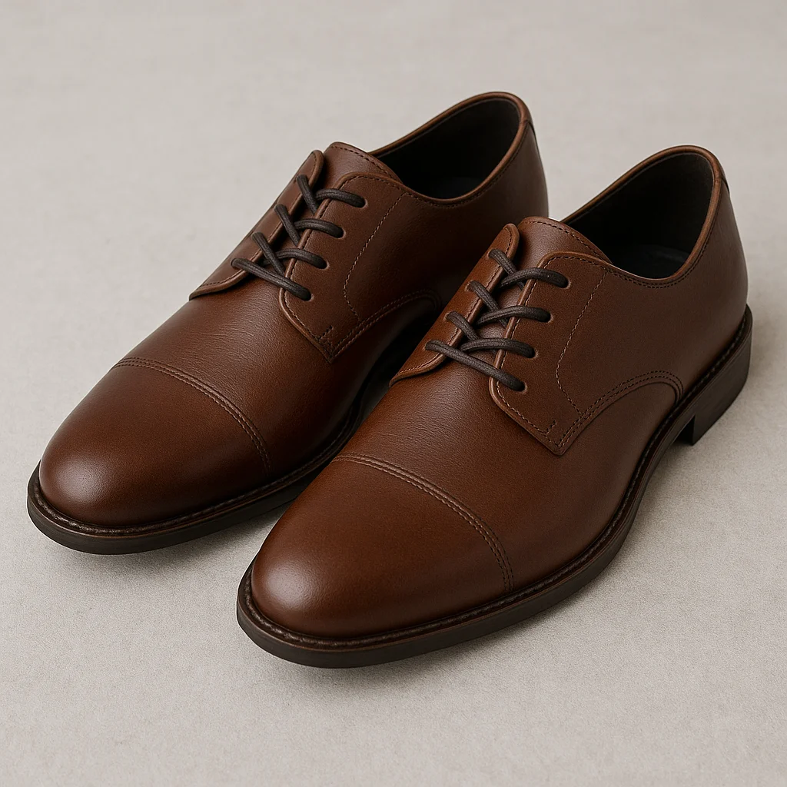
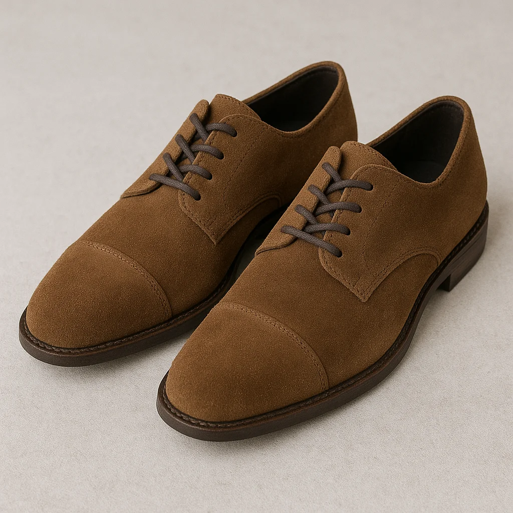
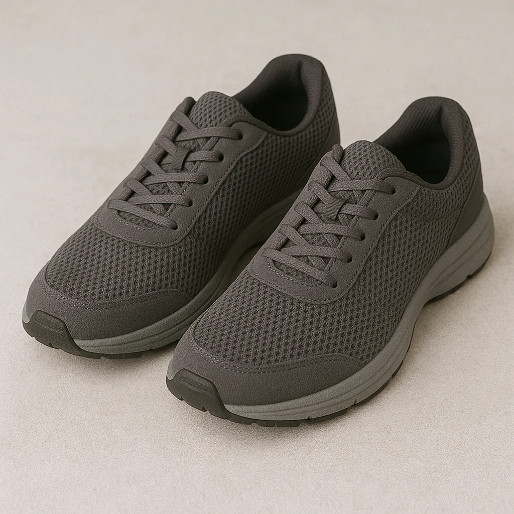

你花了好幾千元買的 Nike、Adidas 名牌球鞋,穿沒多久就髒了、黃了、舊了嗎?其實只要掌握正確的保養方法,球鞋壽命可以延長 2-3 倍!作為板橋地區專業的洗鞋店,我們每天處理上百雙各種材質的球鞋,今天就來分享專業洗鞋師的保養秘訣。
💡 重點提醒: 不同材質的球鞋需要不同的保養方式,千萬不要用同一種方法清潔所有鞋子!
秘訣一:認識你的球鞋材質
在清潔保養之前,最重要的是先了解你的球鞋是什麼材質製成的。常見的球鞋材質包括:
1. 真皮材質
像是 Nike Air Force 1、Adidas Stan Smith 等經典鞋款多使用真皮。真皮需要:
- 溫和清潔: 使用專用皮革清潔劑,不要用水直接沖洗
- 定期保養: 每 2-3 週使用皮革保養油
- 防水處理: 噴灑防水噴霧保護
2. 麂皮/絨面材質
Yeezy、New Balance 部分鞋款使用麂皮。麂皮最怕水,需要:
- 乾洗為主: 使用麂皮專用橡皮擦和刷子
- 避免碰水: 濕了要立刻用報紙吸乾
- 定期刷毛: 保持絨毛直立
3. 網布材質
大部分運動鞋使用網布透氣材質。網布可以:
- 水洗清潔: 可以用軟毛刷沾清潔劑刷洗
- 陰乾晾乾: 絕對不要陽光直曬
- 注意力道: 刷洗時不要太用力
秘訣二:日常穿著的保護
預防勝於治療!穿鞋時注意這些細節,可以大幅減少清洗頻率:
- 防水噴霧是必備: 新鞋入手後立刻噴防水噴霧,之後每個月補噴一次
- 雨天避免穿著: 特別是麂皮材質,遇水容易留下水痕
- 準備鞋撐: 不穿時放入鞋撐,保持鞋型不變形
- 輪流穿著: 不要連續穿同一雙鞋超過兩天,讓鞋子休息
- 穿後立刻清潔: 用軟布擦拭表面髒污,不要累積
秘訣三:鞋底和鞋邊的清潔
很多人只注意鞋面,忽略了鞋底和鞋邊!這些部位最容易藏污納垢:
白色鞋底發黃怎麼辦?
白色鞋底最容易變黃,這裡有幾個有效方法:
- 小蘇打粉 + 牙膏: 混合後用舊牙刷刷洗,效果顯著
- 專業增白劑: 洗鞋店使用的專業產品效果最好
- 避免陽光直曬: 曬鞋時用白色衛生紙包住,防止變黃
鞋邊清潔技巧
鞋邊的橡膠部分特別容易髒:
- 使用橡皮擦可以去除大部分髒污
- 頑固污漬用去污膏搭配海綿
- 不要用指甲摳,會損傷材質
秘訣四:正確的清洗方式
如果球鞋真的很髒,需要徹底清洗,請按照以下步驟:
⚠️ 警告: 名貴球鞋(超過 5000 元)建議交給專業洗鞋店處理,不要自己清洗!
清洗步驟:
- 拆卸配件: 取下鞋帶、鞋墊,分開清洗
- 去除表面灰塵: 用軟毛刷輕刷鞋面
- 局部清潔: 用清潔劑和軟布擦拭髒污處
- 沖洗(限水洗材質): 用清水沖洗,不要浸泡
- 陰乾: 塞入報紙或鞋撐,放通風處陰乾
- 後續保養: 完全乾燥後噴防水噴霧
秘訣五:什麼時候該找專業洗鞋店?
有些情況建議交給專業處理,省時又安全:
建議找專業洗鞋店的情況:
- 名貴球鞋: 限量款、聯名款、價格超過 5000 元
- 特殊材質: 麂皮、漆皮、編織材質
- 嚴重髒污: 泥巴、油漬、頑固污漬
- 發霉或異味: 需要專業除菌消臭
- 不確定材質: 擔心自己清洗會損壞
專業洗鞋的優勢:
- 使用專業清潔設備和藥劑
- 依據材質選擇最適合的清潔方式
- 深層除菌消臭
- 處理後做防護處理
- 有保固,清洗過程有保障
🏆 C.H 精緻洗衣 - 板橋專業洗鞋專家
我們專精各種名牌球鞋清潔保養
Nike、Adidas、New Balance、Yeezy 等各大品牌
真皮、麂皮、網布、編織材質都難不倒我們!
板橋、新莊、土城、中和、永和地區免費到府收送
💬 LINE 立即預約或來電: 02-2255-8686
總結
球鞋保養不難,關鍵是:
- 認識材質 - 不同材質用不同方法
- 日常保護 - 防水噴霧、定期清潔
- 正確清洗 - 溫和清潔、陰乾為主
- 定期保養 - 使用保養油、防水噴霧
- 專業協助 - 貴重或特殊材質找專業
只要養成良好的保養習慣,你的愛鞋就能陪伴你更長久!如果對球鞋清潔保養還有任何疑問,歡迎隨時來電或加 LINE 諮詢,C.H 精緻洗衣很樂意為您服務!
📍 C.H 精緻洗衣
地址: 新北市板橋區華江八路6號1樓
電話: 02-2255-8686
LINE: @ch_wash
營業時間: 週一至週日 10:30-20:00 (週六公休)
地址: 新北市板橋區華江八路6號1樓
電話: 02-2255-8686
LINE: @ch_wash
營業時間: 週一至週日 10:30-20:00 (週六公休)